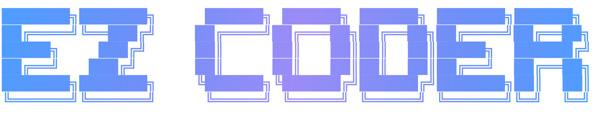
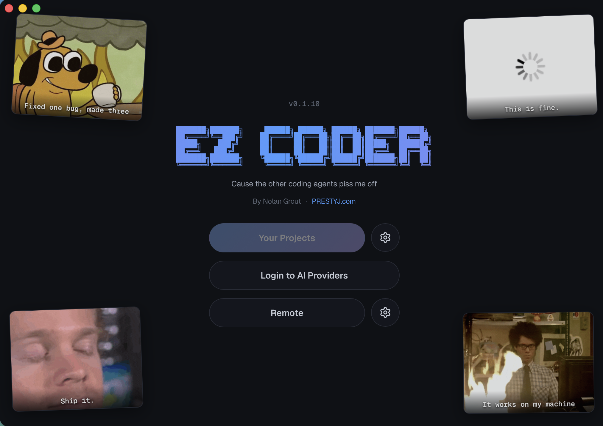

Sign in, don't paste keys
OAuth straight into your Claude or ChatGPT subscription. Prefer a key? Drop one in for Gemini, Grok, OpenRouter or Groq. Credentials stay on your machine.

A desktop coding agent you actually own. Sign in with your Claude, ChatGPT or Gemini account — no API keys to wrangle. Open every project in its own window, let it plan before it touches your code, and watch every move it makes.
Free · open source · auto-updates

The same agent that powers the CLI, wrapped in a desktop app your friends can install in one click.
OAuth straight into your Claude or ChatGPT subscription. Prefer a key? Drop one in for Gemini, Grok, OpenRouter or Groq. Credentials stay on your machine.
It finds your work automatically — EZ Coder, Claude Code and Codex sessions all show up in the picker, newest first, ready to resume.
Each window runs its own agent on its own project — fully isolated. Tile two, four or six up — onto any monitor you pick — and let them grind in parallel while you watch.
Tell it to think first. It researches read-only, hands you a plan to approve, tweak or reject — then implements exactly what you signed off on.
See every read, edit and command as it happens. Queue up a task list and let it run them end-to-end, each in a fresh session.
Hit Remote and steer the agent over Telegram. Kick off a job from the couch, get the result when it's done.
Tap any shot to blow it up. This is the real app — captured straight from the build.
Pick your platform — the app keeps itself up to date after that.
On Linux or want to build it yourself? It's open source — read the build docs.
Install EZ Coder, then paste one prompt and let it set up your whole machine for coding: Git, Node.js, Python, Docker and more. It checks what you already have and skips it.
.dmg above, drag EZ
Coder into Applications and open it. If macOS blocks it, right-click the app and
choose Open.
dev-setup. The agent needs a folder to work in.
Set up this Mac for software development. Go through the checklist below one step at a time.
Ground rules:
- Check before installing. If a tool is already installed and working, skip it and say so. Never reinstall or downgrade something that works.
- Use Homebrew for installs. Don't run sudo yourself. If a step needs my password or a click in a system dialog, stop, tell me exactly what to type or click, and wait for me to say "done".
- After each install, check it with a version command before moving on.
- Don't delete anything or change settings beyond what's listed here.
Checklist:
1. Xcode Command Line Tools: check `xcode-select -p`. If missing, run `xcode-select --install` and wait while I finish the dialog.
2. Homebrew: check `brew --version`. If missing, give me the official install command from brew.sh to paste into Terminal (it needs my password). Then make sure brew is on PATH in ~/.zprofile (/opt/homebrew on Apple Silicon).
3. Git and GitHub CLI: `brew install git gh`.
4. Node.js LTS: `brew install fnm`, add `eval "$(fnm env --use-on-cd --shell zsh)"` to ~/.zshrc, then `fnm install --lts` and `fnm default lts-latest`. Install pnpm with `npm install -g pnpm`. Check `node -v`, `npm -v` and `pnpm -v`.
5. Python: `brew install python uv`. Check `python3 --version` and `uv --version`.
6. Docker Desktop: `brew install --cask docker-desktop` (on older Homebrew the cask is called `docker`), then `open -a Docker`. Tell me to accept the license and permission prompts. Wait until `docker info` works, then run `docker run --rm hello-world` to prove it.
7. Git identity: if `git config --global user.name` or `user.email` is empty, ask me for my name and email and set them. Also set `git config --global init.defaultBranch main`.
8. GitHub sign-in: if `gh auth status` says I'm not logged in, tell me to run `gh auth login` in Terminal (pick HTTPS and browser login) and wait.
At the end, show a table of every tool with its version and whether you installed it or it was already there. Tell me to open a new Terminal window so the PATH changes take effect, and list anything that still needs me to do something..exe above and run it.
If SmartScreen pops up, choose More info → Run anyway.
dev-setup. The agent needs a folder to work in.
Set up this Windows PC for software development, with Docker Desktop running on WSL 2. Go through the checklist below one step at a time.
Ground rules:
- Run Windows commands with PowerShell (`powershell -NoProfile -Command "..."`). Install with winget, always adding `--accept-source-agreements --accept-package-agreements`.
- Check before installing. If something is already installed and working, skip it and say so. Never reinstall or downgrade something that works.
- After each winget install, reload PATH from the registry (Machine + User) or use the full install path. Don't assume a new tool is visible yet.
- For steps that need admin rights, use `Start-Process ... -Verb RunAs -Wait`. Tell me before each one so I know to click Yes on the UAC prompt.
- If a step needs a restart, first save what's done and what's next to ~/dev-setup-progress.md, then tell me to restart and stop. When I paste this prompt again, read that file first and carry on from there.
- Don't delete anything or change settings beyond what's listed here.
Checklist:
1. winget: check `winget --version`. If it doesn't work, tell me to update "App Installer" from the Microsoft Store and wait.
2. Git for Windows and GitHub CLI: `winget install --id Git.Git -e` and `winget install --id GitHub.cli -e`. EZ Coder uses Git Bash as its shell, so do this first.
3. Virtualization: check `(Get-CimInstance Win32_Processor).VirtualizationFirmwareEnabled` (or Task Manager > Performance > CPU). If it's off, stop and tell me how to turn it on in the BIOS/UEFI for my PC.
4. WSL 2: check `wsl --status`. If WSL isn't installed, run `wsl --install` as admin (this installs WSL 2 and Ubuntu), then save progress and ask me to restart. After the restart: run `wsl --update` and `wsl --set-default-version 2`, and make sure `wsl -l -v` shows Ubuntu on VERSION 2 (fix it with `wsl --set-version Ubuntu 2` if not). Tell me to open "Ubuntu" from the Start menu once to create my Linux username and password.
5. Docker Desktop on WSL 2: install it with `winget install --id Docker.DockerDesktop -e --override "install --quiet --accept-license --backend=wsl-2"`. Make sure my Windows user is in the `docker-users` group; if not, add it as admin and tell me to sign out and back in. Start Docker Desktop and confirm "Use the WSL 2 based engine" is on (`"wslEngineEnabled": true` in %APPDATA%\Docker\settings-store.json) and that WSL integration is on for Ubuntu (Settings > Resources > WSL integration). Wait until `docker info` works and shows a WSL2 kernel, then run `docker run --rm hello-world` to prove it.
6. Node.js LTS: `winget install --id OpenJS.NodeJS.LTS -e`, then `npm install -g pnpm`. Check `node -v`, `npm -v` and `pnpm -v`.
7. Python: run `winget search Python.Python.3` and install the newest Python 3, plus uv (`winget install --id astral-sh.uv -e`). Check `python --version` and `uv --version`.
8. Git identity: if `git config --global user.name` or `user.email` is empty, ask me for my name and email and set them. Also set `git config --global init.defaultBranch main`.
9. GitHub sign-in: if `gh auth status` says I'm not logged in, tell me to run `gh auth login` in a terminal (pick HTTPS and browser login) and wait.
At the end, show a table of every tool with its version and whether you installed it or it was already there. Delete ~/dev-setup-progress.md if everything is done. Tell me to fully quit and reopen EZ Coder so it picks up Git Bash and the new PATH, and list anything that still needs me to do something.
Not for the big ones. You can sign in with your existing Claude or ChatGPT
subscription via OAuth. Gemini, Grok, OpenRouter and Groq take an API key if you want
them. Everything is stored locally under ~/.ezcoder/.
The app is free and open source. You pay your AI provider for usage the same way you already do — EZ Coder just talks to them on your behalf.
Nowhere it doesn't already go. The agent runs locally on your machine and talks directly to the model provider you signed into. There's no EZ Coder server in the middle.
macOS on Apple Silicon and 64-bit Windows. Intel Macs and Linux aren't pre-built yet, but the source builds on all three — see the build docs.
It might. If Windows SmartScreen flags the installer, choose More info → Run anyway; if macOS blocks it, right-click the app and pick Open. It's open source — the code's right there on GitHub.
Automatically. The app checks for new releases and offers a one-click update that downloads, installs and relaunches — no reinstalling.